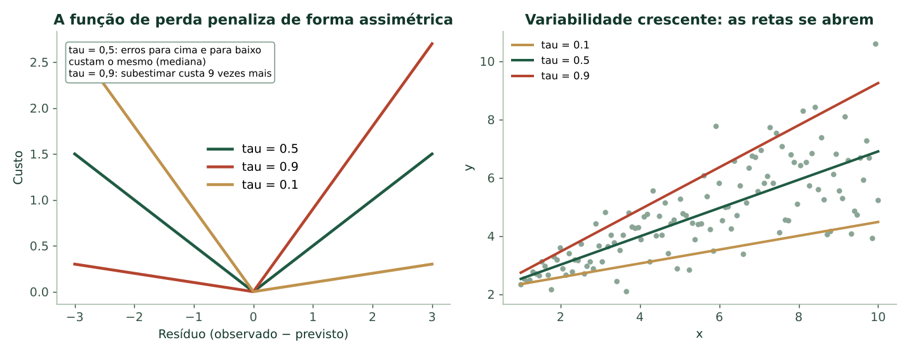
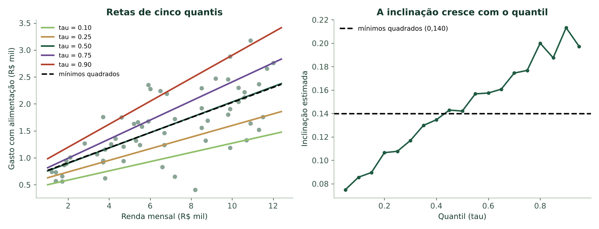

Regressão quantílica
Examina como os preditores afetam diferentes quantis da resposta, como a mediana ou os extremos, e não apenas a média.
Comece por aqui
A regressão linear responde a uma pergunta sobre a média: quanto aumenta o gasto médio quando a renda sobe? Mas a média pode esconder o que mais interessa. Entre famílias de mesma renda, algumas gastam pouco e outras muito, e essa dispersão pode crescer com a renda. A regressão quantílica permite perguntar sobre a mediana, sobre os 10% que menos gastam ou sobre os 10% que mais gastam, cada um com sua própria reta.
O quantil de ordem \(\tau\) é o valor abaixo do qual está a proporção \(\tau\) das observações. A mediana é o quantil 0,50; o primeiro quartil, o quantil 0,25. Modelar o quantil 0,90 do gasto significa descrever o comportamento das famílias que mais gastam, e não de uma família típica.
O que é o modelo
Para cada quantil \(\tau\) escolhido há um conjunto próprio de coeficientes. A estimação não usa mínimos quadrados: minimiza-se a soma de uma perda assimétrica, que penaliza de forma diferente os resíduos positivos e os negativos. Para \(\tau=0{,}5\) os dois lados pesam igual, e o resultado é a reta da mediana; para \(\tau=0{,}9\), subestimar custa nove vezes mais que superestimar, e a reta sobe.

Pressupostos e como verificá-los
| Pressuposto | Por que importa | Como verificar |
|---|---|---|
| Observações independentes | Condição da inferência. | Delineamento do estudo. |
| Linearidade do quantil em relação aos preditores | O modelo supõe que o quantil, não a média, é linear. | Gráfico de dispersão com as retas sobrepostas; resíduos. |
| Resposta contínua | Quantis de variáveis muito discretas são mal definidos. | Número de valores distintos da resposta. |
| Amostra suficiente nas caudas | Estimar o quantil 0,95 com n = 40 é pedir demais. | Como referência, pelo menos 10 a 20 observações além do quantil de interesse. |
| Normalidade e variância constante | Não são exigidas: é justamente a vantagem do método. | — |
Hipóteses e estatística de teste
Em que:
- \(\tau\)
- quantil de interesse, entre 0 e 1
- \(\rho_{\tau}\)
- função de perda (chamada check function ou perda pinball)
- \(u\)
- resíduo: \(y_i-\mathbf x_i^{\top}\boldsymbol\beta\)
- \(\mathbb 1(u<0)\)
- vale 1 quando o resíduo é negativo e 0 caso contrário
- \(\beta_j(\tau)\)
- coeficiente do preditor \(x_j\) para o quantil \(\tau\)
- \(Q_Y(\tau\mid\mathbf x)\)
- quantil \(\tau\) da resposta, dado o perfil de covariáveis
Exemplo numérico, passo a passo
Suponha resíduos de \(+2\) e \(-2\) e considere dois quantis.
| Resíduo | Perda com τ = 0,50 | Perda com τ = 0,90 |
|---|---|---|
| +2 (modelo subestimou) | 0,50 × 2 = 1,0 | 0,90 × 2 = 1,8 |
| −2 (modelo superestimou) | 0,50 × 2 = 1,0 | 0,10 × 2 = 0,2 |
Com \(\tau=0{,}5\), os dois erros custam o mesmo: a reta que minimiza o total deixa metade dos pontos acima e metade abaixo — é a mediana condicional.
Com \(\tau=0{,}9\), ficar abaixo do ponto custa nove vezes mais: compensa subir a reta até que apenas 10% dos pontos fiquem acima dela.
O problema é resolvido por programação linear. O R usa o algoritmo simplex de Barrodale–Roberts (ou o de pontos interiores em amostras grandes); a solução é exata, não iterativa como nos modelos de verossimilhança.
Inferência
| Método | Quando usar | No R |
|---|---|---|
| Inversão do teste de postos | Padrão; bom para amostras pequenas | summary(modelo) |
| Bootstrap de pares | Geral, inclusive sob heterocedasticidade | summary(modelo, se = "boot") |
| Matriz sanduíche | Amostras grandes | summary(modelo, se = "nid") |
| Teste de igualdade entre quantis | Comparar dois quantis | anova(modelo_tau1, modelo_tau2) |
Propriedades
- É robusta a valores extremos na resposta: deslocar um ponto para muito longe não altera a reta da mediana, desde que ele permaneça do mesmo lado.
- É invariante a transformações monotônicas: o quantil do logaritmo é o logaritmo do quantil, o que não vale para a média.
- Não exige nenhuma suposição sobre a distribuição dos erros.
- As retas de quantis diferentes podem, em princípio, se cruzar dentro da faixa dos dados; isso é sinal de modelo mal especificado ou de pouca informação.
- Com \(\tau=0{,}5\) e sem preditores, a estimativa é a mediana amostral, assim como os mínimos quadrados devolvem a média.
- Estimar muitos quantis dá um retrato completo de como a distribuição da resposta muda com os preditores.
Como interpretar os resultados
| Situação | Leitura |
|---|---|
| Inclinações parecidas em todos os quantis | O preditor desloca a distribuição inteira; os mínimos quadrados bastariam. |
| Inclinação crescente com τ | O preditor aumenta também a dispersão: as diferenças entre unidades se ampliam. |
| Inclinação significativa só em alguns quantis | O efeito existe em parte da distribuição; a média pode escondê-lo. |
| Retas que se cruzam | Modelo mal especificado ou amostra pequena nas caudas. |
Reporte os coeficientes de cada quantil com seus intervalos de confiança, o método usado para obtê-los e, de preferência, o gráfico do coeficiente em função de τ.
Como executar no R e em Python
Onde executar o código em Python
Não é preciso instalar nada: o Google Colab é um computador na nuvem, gratuito, que executa Python pelo navegador e já traz as bibliotecas usadas aqui (numpy, scipy e matplotlib).
rq() pertence ao pacote quantreg (KOENKER). Instale uma única vez com install.packages("quantreg") e carregue com library(quantreg). O argumento tau aceita um valor ou um vetor de quantis. O summary() usa, por padrão, intervalos por inversão de teste de postos; se = "boot" produz erros-padrão por bootstrap.
# install.packages("quantreg")
library(quantreg)
modelo <- rq(gasto ~ renda, tau = c(0.10, 0.50, 0.90), data = dados)
summary(modelo, se = "boot")
O código Python desta ficha faz as contas passo a passo com numpy e scipy, para que cada resultado possa ser acompanhado. No dia a dia, as bibliotecas statsmodels e lifelines, também disponíveis no Google Colab, oferecem esses modelos prontos.
A execução do bloco completo leva cerca de 15 segundos, por causa das reamostragens de bootstrap.
Exemplo de aplicação
Contexto dos dados
Sessenta domicílios tiveram registradas a renda mensal e o gasto com alimentação, ambos em milhares de reais. Sabe-se desde Engel (1857) que o gasto com alimentação cresce com a renda, mas menos que proporcionalmente. A pergunta aqui é outra: esse crescimento é o mesmo para quem gasta pouco e para quem gasta muito? Os dados são fictícios, criados para esta ficha.
Código em R
# Regressão quantílica: exemplo completo ----
# Pacote: quantreg. Instale uma única vez: install.packages("quantreg")
library(quantreg)
# 1. Dados: 60 domicílios; renda mensal e gasto com alimentação, em R$ mil (dados fictícios)
dados <- data.frame(
renda = c(1.2, 1.4, 1.4, 1.7, 1.7, 1.8, 1.9, 1.9, 2.1, 2.8, 3.4, 3.7, 3.7, 3.7, 3.8,
3.8, 4.1, 4.3, 4.6, 4.7, 4.7, 5.2, 5.3, 5.4, 5.5, 5.6, 5.9, 5.9, 6.0, 6.5,
6.6, 6.7, 6.7, 6.8, 7.2, 7.2, 8.2, 8.5, 8.5, 8.5, 8.7, 8.8, 9.2, 9.8, 9.8,
9.9, 9.9, 9.9, 10.3, 10.3, 10.6, 10.6, 10.7, 10.9, 10.9, 11.3, 11.3, 11.5, 11.7, 12.0),
gasto = c(0.74, 0.73, 0.57, 0.56, 0.66, 0.87, 0.95, 0.89, 1.01, 1.27, 1.07, 0.92, 1.76, 0.95, 0.62,
1.16, 1.25, 1.36, 1.75, 0.94, 1.21, 1.63, 1.32, 1.66, 1.24, 1.58, 1.68, 2.35, 2.28, 2.24,
0.83, 1.46, 1.24, 2.19, 1.72, 0.65, 0.41, 2.29, 1.92, 1.56, 1.32, 1.69, 2.47, 1.80, 2.46,
1.19, 2.88, 1.91, 2.04, 2.30, 2.12, 2.22, 1.33, 3.18, 1.64, 1.52, 2.37, 1.76, 2.66, 2.76))
# 2. Mínimos quadrados (referência): modela a média
mq <- lm(gasto ~ renda, data = dados)
summary(mq)
# 3. Heterocedasticidade: a variabilidade cresce com a renda
metade <- dados$renda <= median(dados$renda)
c(dp_rendas_baixas = sd(residuals(mq)[metade]), dp_rendas_altas = sd(residuals(mq)[!metade]))
# 4. Regressão quantílica em cinco quantis
modelo <- rq(gasto ~ renda, tau = c(0.10, 0.25, 0.50, 0.75, 0.90), data = dados)
modelo
summary(modelo, se = "boot", R = 1000)
# 5. As inclinações diferem entre os quantis?
anova(rq(gasto ~ renda, tau = 0.10, data = dados),
rq(gasto ~ renda, tau = 0.90, data = dados))
# 6. Robustez: efeito de um valor atípico
dados2 <- dados; dados2$gasto[60] <- 9.00
c(mq_antes = coef(mq)[2], mq_depois = coef(lm(gasto ~ renda, data = dados2))[2],
mediana_antes = coef(rq(gasto ~ renda, tau = 0.5, data = dados))[2],
mediana_depois = coef(rq(gasto ~ renda, tau = 0.5, data = dados2))[2])
# 7. Gráficos
plot(gasto ~ renda, data = dados, pch = 19, col = "gray50",
xlab = "Renda mensal (R$ mil)", ylab = "Gasto com alimentação (R$ mil)")
for (t in c(0.10, 0.25, 0.50, 0.75, 0.90)) abline(rq(gasto ~ renda, tau = t, data = dados), col = "darkgreen")
abline(mq, col = "red", lwd = 2, lty = 2)
# Como a inclinação varia ao longo dos quantis
plot(summary(rq(gasto ~ renda, tau = seq(0.05, 0.95, 0.05), data = dados)))
A mesma análise em Python, com os resultados
Cole o código em um notebook do Google Colab ↗ e execute com Shift+Enter. Os valores abaixo são a saída desse código.
# Bibliotecas: numpy, scipy e matplotlib (já instaladas no Google Colab)
import numpy as np
from scipy import stats, optimize
import matplotlib.pyplot as plt
def rq(X, y, tau):
"""Regressão quantílica por programação linear:
minimiza a soma de tau*|resíduo positivo| + (1-tau)*|resíduo negativo|."""
n, p = X.shape
custo = np.r_[np.zeros(2 * p), tau * np.ones(n), (1 - tau) * np.ones(n)]
A = np.c_[X, -X, np.eye(n), -np.eye(n)]
res = optimize.linprog(custo, A_eq=A, b_eq=y, bounds=[(0, None)] * (2 * p + 2 * n), method="highs")
return res.x[:p] - res.x[p:2 * p]
def rq_boot(X, y, tau, B=1000, semente=2026):
"""Erro-padrão e IC de 95% por bootstrap de pares."""
rng = np.random.default_rng(semente); n = len(y)
saida = np.array([rq(X[i := rng.integers(0, n, n)], y[i], tau) for _ in range(B)])
return saida.std(axis=0, ddof=1), np.percentile(saida, [2.5, 97.5], axis=0)
# 1. Dados: 60 domicílios; renda mensal e gasto com alimentação, em R$ mil (dados fictícios)
renda = np.array([1.2, 1.4, 1.4, 1.7, 1.7, 1.8, 1.9, 1.9, 2.1, 2.8, 3.4, 3.7, 3.7, 3.7, 3.8,
3.8, 4.1, 4.3, 4.6, 4.7, 4.7, 5.2, 5.3, 5.4, 5.5, 5.6, 5.9, 5.9, 6.0, 6.5,
6.6, 6.7, 6.7, 6.8, 7.2, 7.2, 8.2, 8.5, 8.5, 8.5, 8.7, 8.8, 9.2, 9.8, 9.8,
9.9, 9.9, 9.9, 10.3, 10.3, 10.6, 10.6, 10.7, 10.9, 10.9, 11.3, 11.3, 11.5, 11.7, 12.0])
gasto = np.array([0.74, 0.73, 0.57, 0.56, 0.66, 0.87, 0.95, 0.89, 1.01, 1.27, 1.07, 0.92, 1.76, 0.95, 0.62,
1.16, 1.25, 1.36, 1.75, 0.94, 1.21, 1.63, 1.32, 1.66, 1.24, 1.58, 1.68, 2.35, 2.28, 2.24,
0.83, 1.46, 1.24, 2.19, 1.72, 0.65, 0.41, 2.29, 1.92, 1.56, 1.32, 1.69, 2.47, 1.80, 2.46,
1.19, 2.88, 1.91, 2.04, 2.30, 2.12, 2.22, 1.33, 3.18, 1.64, 1.52, 2.37, 1.76, 2.66, 2.76])
n = len(renda); X = np.column_stack([np.ones(n), renda])
print(f"n = {n} | renda de {renda.min()} a {renda.max()} mil | gasto de {gasto.min()} a {gasto.max()} mil")
# 2. Mínimos quadrados (referência): modela a média
b_mq = np.linalg.solve(X.T @ X, X.T @ gasto)
res = gasto - X @ b_mq; s2 = res @ res / (n - 2)
ep_mq = np.sqrt(s2 * np.diag(np.linalg.inv(X.T @ X)))
print(f"\nMínimos quadrados: intercepto = {b_mq[0]:.4f} ({ep_mq[0]:.4f}) | inclinação = {b_mq[1]:.4f} ({ep_mq[1]:.4f})")
# 3. Heterocedasticidade: variabilidade cresce com a renda
metade = renda <= np.median(renda)
print(f"DP dos resíduos: rendas baixas = {res[metade].std(ddof=1):.4f} | rendas altas = {res[~metade].std(ddof=1):.4f}")
# 4. Regressão quantílica em cinco quantis
print("\n tau intercepto inclinação EP (bootstrap) IC 95% da inclinação")
resultados = {}
for tau in [0.10, 0.25, 0.50, 0.75, 0.90]:
b = rq(X, gasto, tau); ep, ic = rq_boot(X, gasto, tau)
resultados[tau] = (b, ep, ic)
print(f"{tau:5.2f} {b[0]:>9.4f} {b[1]:>10.4f} {ep[1]:>13.4f} [{ic[0,1]:.4f}; {ic[1,1]:.4f}]")
# 5. Teste informal: as inclinações de tau = 0,10 e tau = 0,90 diferem?
b10, b90 = resultados[0.10][0][1], resultados[0.90][0][1]
rng = np.random.default_rng(7)
dif = np.array([(lambda i: rq(X[i], gasto[i], 0.90)[1] - rq(X[i], gasto[i], 0.10)[1])(rng.integers(0, n, n)) for _ in range(500)])
print(f"\nDiferença entre as inclinações (0,90 − 0,10) = {b90 - b10:.4f}")
print(f"IC 95% por bootstrap = [{np.percentile(dif, 2.5):.4f}; {np.percentile(dif, 97.5):.4f}]")
# 6. Mediana comparada à média: efeito de um valor extremo
gasto2 = gasto.copy(); gasto2[59] = 9.00 # erro de digitação na última observação
b_mq2 = np.linalg.solve(X.T @ X, X.T @ gasto2)
print(f"\nCom um valor atípico (última observação: 2,76 -> 9,00 mil):")
print(f" mínimos quadrados: inclinação {b_mq[1]:.4f} -> {b_mq2[1]:.4f}")
print(f" mediana (tau = 0,50): inclinação {resultados[0.50][0][1]:.4f} -> {rq(X, gasto2, 0.50)[1]:.4f}")
# 7. Previsão: gasto em cada quantil para uma renda de R$ 8 mil
print("\nRenda de R$ 8 mil: gasto previsto em cada quantil")
for tau in [0.10, 0.25, 0.50, 0.75, 0.90]:
b = resultados[tau][0]
print(f" tau = {tau:.2f}: R$ {b[0] + b[1] * 8:.3f} mil")
# 8. Gráfico: retas quantílicas
plt.scatter(renda, gasto, color="gray")
grade = np.linspace(1, 12.5, 50)
for tau in [0.10, 0.25, 0.50, 0.75, 0.90]:
b = resultados[tau][0]
plt.plot(grade, b[0] + b[1] * grade, label=f"tau = {tau:.2f}")
plt.plot(grade, b_mq[0] + b_mq[1] * grade, "k--", label="mínimos quadrados")
plt.xlabel("Renda mensal (R$ mil)"); plt.ylabel("Gasto com alimentação (R$ mil)"); plt.legend()
plt.show()
Resultados da execução
n = 60 | renda de 1.2 a 12.0 mil | gasto de 0.41 a 3.18 mil Mínimos quadrados: intercepto = 0.6274 (0.1394) | inclinação = 0.1398 (0.0189) DP dos resíduos: rendas baixas = 0.3440 | rendas altas = 0.5677 tau intercepto inclinação EP (bootstrap) IC 95% da inclinação 0.10 0.4146 0.0856 0.0274 [0.0138; 0.1224] 0.25 0.5215 0.1077 0.0243 [0.0740; 0.1641] 0.50 0.6143 0.1420 0.0177 [0.1143; 0.1853] 0.75 0.6388 0.1768 0.0242 [0.1314; 0.2347] 0.90 0.7692 0.2132 0.0444 [0.0945; 0.2478] Diferença entre as inclinações (0,90 − 0,10) = 0.1277 IC 95% por bootstrap = [0.0140; 0.1915] Com um valor atípico (última observação: 2,76 -> 9,00 mil): mínimos quadrados: inclinação 0.1398 -> 0.1927 mediana (tau = 0,50): inclinação 0.1420 -> 0.1420 Renda de R$ 8 mil: gasto previsto em cada quantil tau = 0.10: R$ 1.099 mil tau = 0.25: R$ 1.383 mil tau = 0.50: R$ 1.751 mil tau = 0.75: R$ 2.053 mil tau = 0.90: R$ 2.475 mil

| τ | Intercepto | Inclinação | Erro-padrão (bootstrap) | IC 95% da inclinação |
|---|---|---|---|---|
| 0,10 | 0,4146 | 0,0856 | 0,0274 | [0,0138; 0,1224] |
| 0,25 | 0,5215 | 0,1077 | 0,0243 | [0,0740; 0,1641] |
| 0,50 | 0,6143 | 0,1420 | 0,0177 | [0,1143; 0,1853] |
| 0,75 | 0,6388 | 0,1768 | 0,0242 | [0,1314; 0,2347] |
| 0,90 | 0,7692 | 0,2132 | 0,0444 | [0,0945; 0,2478] |
| Mínimos quadrados | 0,6274 | 0,1398 | 0,0189 | — |
| Elemento | Valor | Leitura |
|---|---|---|
| DP dos resíduos (rendas baixas / altas) | 0,344 / 0,568 | Heterocedasticidade clara. |
| Diferença entre as inclinações 0,90 e 0,10 | 0,128; IC 95% [0,014; 0,192] | O intervalo não contém zero. |
| Efeito de um valor atípico sobre a inclinação | Mínimos quadrados: 0,1398 → 0,1927 | Aumento de 38%. |
| O mesmo, pela mediana | 0,1420 → 0,1420 | Sem alteração. |
| τ | Gasto previsto |
|---|---|
| 0,10 | R$ 1,099 mil |
| 0,25 | R$ 1,383 mil |
| 0,50 | R$ 1,751 mil |
| 0,75 | R$ 2,053 mil |
| 0,90 | R$ 2,475 mil |
Leitura: cada R$ 1000 a mais de renda aumentam o gasto com alimentação em R$ 86 entre os domicílios que menos gastam e em R$ 213 entre os que mais gastam. A reta de mínimos quadrados (R$ 140) fica no meio e, sozinha, sugeriria um efeito único para todos. O intervalo da diferença entre os quantis extremos não contém zero, de modo que a abertura das retas não é apenas ruído amostral.
A última comparação ilustra a robustez do método. Ao trocar o gasto da última observação de 2,76 para 9,00 mil, como um erro de digitação, a inclinação de mínimos quadrados salta de 0,140 para 0,193, enquanto a da mediana permanece exatamente em 0,142: o ponto alterado continua sendo apenas “um valor acima da reta”, e sua distância não entra na conta.
Erros comuns
| Erro | Como evitar |
|---|---|
| Estimar quantis extremos com amostra pequena | Com n = 60, o quantil 0,99 é inestimável; fique entre 0,1 e 0,9. |
| Interpretar como “o efeito nas famílias pobres” | O quantil é da resposta condicional, não um subgrupo fixo de unidades. |
| Reportar só a mediana | O ganho do método está em comparar vários quantis. |
| Ignorar o cruzamento das retas | Indica modelo mal especificado na faixa observada. |
| Usar erros-padrão de mínimos quadrados | Use inversão de postos ou bootstrap. |
| Aplicar a respostas muito discretas | Quantis de contagens pequenas são mal definidos; considere outros modelos. |
| Comparar R² com o da regressão linear | A medida de ajuste da regressão quantílica é outra (pseudo-R² de Koenker–Machado). |
Alternativas e fluxo de trabalho
| Procedimento | Quando preferir |
|---|---|
| Mínimos quadrados | Interesse na média e erros aproximadamente homocedásticos. |
| Mínimos quadrados ponderados | Heterocedasticidade com forma conhecida e interesse na média. |
Regressão robusta (M-estimadores, MASS::rlm) | Valores extremos, mas interesse ainda na parte central. |
| Transformação da resposta (log) | A relação é multiplicativa; lembre que o quantil é invariante à transformação. |
| Regressão quantílica não paramétrica ou aditiva | A relação com o preditor é curva. |
| GAMLSS | Modelar simultaneamente locação, escala e forma. |
| Bootstrap | Quantificar a incerteza de qualquer uma dessas estimativas. |
- Faça o diagrama de dispersão e observe se a dispersão muda com o preditor.
- Ajuste os mínimos quadrados como referência.
- Estime vários quantis (0,1 a 0,9).
- Represente o coeficiente em função de τ.
- Teste se os quantis extremos diferem.
- Interprete cada quantil no contexto do problema.
Referências desta ficha
- KOENKER, Roger; BASSETT JR., Gilbert. Regression quantiles. Econometrica, v. 46, n. 1, p. 33-50, 1978.
- KOENKER, Roger. Quantile regression. Cambridge: Cambridge University Press, 2005.
- KOENKER, Roger; HALLOCK, Kevin F. Quantile regression. Journal of Economic Perspectives, v. 15, n. 4, p. 143-156, 2001.
- KOENKER, Roger. quantreg: quantile regression. R package. Disponível em: https://CRAN.R-project.org/package=quantreg.
- KOENKER, Roger; MACHADO, José A. F. Goodness of fit and related inference processes for quantile regression. Journal of the American Statistical Association, v. 94, n. 448, p. 1296-1310, 1999.
- CADE, Brian S.; NOON, Barry R. A gentle introduction to quantile regression for ecologists. Frontiers in Ecology and the Environment, v. 1, n. 8, p. 412-420, 2003.
- R CORE TEAM. R: a language and environment for statistical computing. Vienna: R Foundation for Statistical Computing, 2026. Disponível em: https://www.r-project.org/.
- POSIT TEAM. RStudio: integrated development environment for R. Boston: Posit Software, PBC. Disponível em: https://posit.co/download/rstudio-desktop/.
- VIRTANEN, Pauli et al. SciPy 1.0: fundamental algorithms for scientific computing in Python. Nature Methods, v. 17, p. 261-272, 2020. DOI: 10.1038/s41592-019-0686-2. (Funções do módulo
scipy.stats.) - HARRIS, Charles R. et al. Array programming with NumPy. Nature, v. 585, p. 357-362, 2020. DOI: 10.1038/s41586-020-2649-2.
- HUNTER, John D. Matplotlib: a 2D graphics environment. Computing in Science & Engineering, v. 9, n. 3, p. 90-95, 2007.
- GOOGLE. Google Colaboratory. Disponível em: https://colab.research.google.com/.
- Os dados do exemplo são fictícios e foram criados pelo autor. As figuras desta ficha foram elaboradas pelo autor.

Prof. Dr. Cássius Henrique Xavier Oliveira
Professor · ICTIN/UFLA · Estatística, Confiabilidade e Ciência de Dados.
Conheça minha trajetória e projetos →